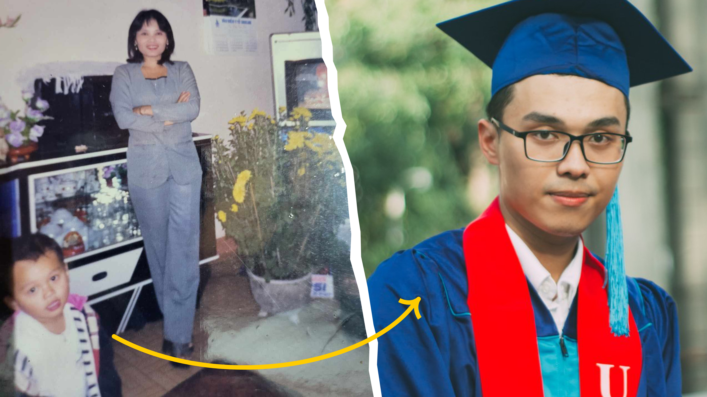

Oh hey ! So you're really interested in getting to know me. Parfait!
This is Chuong—the protagonist of his portfolio.
Currently, I am:
• Open to becoming the next UX Designer on your team (Yes, I'm 100% open to work).
• An intermediate French learner (B1 level), working toward becoming trilingual and ready to charm my way through Montréal.
(TLTR, but hey, you might like me if you know me)
Remember my name
Chuong is my name, and I recently realized it's
pretty tough for non-Vietnamese people to pronounce correctly. I’ve
thought about adopting an English name, but sometimes it just
doesn’t...feel like me. Interestingly, like most Vietnamese kids, I
have a nickname given by my beloved grandma—Gon. If you're into anime,
you might recognize it from
Hunter x Hunter! So call me Chuong or Gon—whichever you prefer, I’m happy with both!
Fun Fact: My very first Canadian Friend,
Emma Kiesekamp, said that my nickname was sooo cool, but she keeps calling me
Chuong, I don't know why.
Chuong, with his grandma who gave him a cool nickname and his grandpa.
Mom, I don't want to be a doctor!
Before becoming a UX Designer, my (Asian) mom always wanted me to follow our family tradition and become a doctor. But becoming a doctor was never what I wanted to be. Moreover, securing a spot in medical school wasn’t easy at all. Reaching the age of 18, I applied to UEH University (Flexing warning: one of the top universities in Vietnam) and majored in International Business—wishfully thinking I would travel the world and enjoy the journey (without any real intention of doing business).
I was a creative child. I loved drawing and was pretty good at it. At 12 years old, I started learning how to create videos using my dad's compact camera and some cracked video-editing software. Then, I began experimenting with (also cracked) Photoshop to make it look like I was traveling around the world in pictures. Although I later went to Business School, I still recognized my passion for creative work. In my second year, I enrolled in a few design courses to pursue that passion and joined some university clubs to practice my skills. In 2018, I landed my first freelance job as a Graphic Designer, and I still remember how happy and proud I was.
Left: My mom and her little "definitely-not-a-doctor" baby. / Right: A Bachelor's in International Business who knew exactly that he wanted to be a UX designer.
Designer—that's what I want to be
Later, I shifted my focus from Graphic Design to UX Design because I fell madly in love with how rational and complex it was. In early 2019, I taught myself UX Design by reading books and learning from online sources. In September 2019, just two months after graduating, I secured my first UX Design job at Swag Soft Holdings.
Also, I want to be more than just a designer
As a member of the "human beings", I also have passions. I practice photography, play guitar and spend time learning French every day. More than anything, I chose to leave my home and family behind to fly all the way to Canada to follow my own dream in 2023, hopefully to have a better future and a better-self.
Sometimes, I’m too focused on reaching my dreams that I forget I’m an immortal human too—I need to live life, not just survive. I probably wouldn’t have made it through the sorrowful Canadian winter without my adventurous friend, Amaan, who pulled me outside to practice skating. That reminded me of the importance of self-cultivation—of nurturing the body, heart, and mind—to be able to pursue my passions and dreams in the long run.

Amaan and I have reached a point where we can skate and chat at the same time now.
And I feel blessed
"Being accepted by others is a reminder to offer that same grace in return."
...That was what my grandma said when I told her I wouldn’t be able to be with anyone in this life, because I know how strict I am with myself and with others. Of course, the English version only partly captures the meaning in Vietnamese—after all, “traduire, c’est trahir” (to translate is to betray). Anyways, her words have stuck in my head ever since, and they’ve become a part of who I am today. Probably thanks to that, I’ve built many great relationships with others.
Let me end this self-pitch with my 2025 resolutions: "Challenge myself to do something uncomfortable every day" and "have the courage to ask for what I want". I hope you feel like you know me a little bit now, but just so you know—I’m much more interesting than what I’ve just told you. I love tea—Both herbal and verbal, get in touch with me via Linkedin and I'll spill more tea about myself, so I can go from being "just another designer out there" to "Chuong – a designer you actually know."